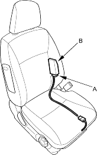
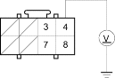

- Make sure nothing is sitting on the front passenger's seat.
- Initialise the OPDS unit (see page 23-39).
- Erase the DTC memory (see page 23-38).
- Read the DTC.
Is DTC 15-1 indicated?
YES - Go to step 5.
NO - Intermittent failure, system is OK at this time. Go to Troubleshooting Intermittent Failures (see page 23-38).
- Check the No. 9 (10A) fuse in the under-dash fuse/relay box.
Is the fuse OK?
YES - Go to step 6.
NO - Go to step 9.
- Disconnect the O1i connector (A) from the OPDS unit (B).

- Turn the ignition switch ON (II).
- Check for voltage between the No. 4 terminal of the O1i connector and body ground. There should be battery voltage.
O1i CONNECTOR

Wire side of female terminals
Is there battery voltage?
YES - Go to step 16.
NO - Open in the floor wire harness or in the OPDS unit harness; replace the faulty harness. 
- Replace the No. 9 (10A) fuse in the under-dash fuse/relay box.
- Turn the ignition switch ON (II) for 30 seconds then turn it OFF.
- Check the No. 9 (10A) fuse in under-dash fuse/relay box.
Is the fuse OK?
YES - Intermittent failure, system is OK at this time. Go to Troubleshooting Intermittent Failures (see page 23-38).
NO - Go to step 12.
- Replace the No. 9 (10 A) fuse in the under-dash fuse/relay box.